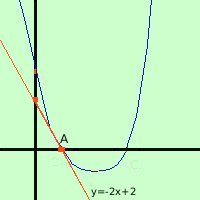

|
trovare le intersezioni fra la parabola y = x2 - 4x + 3 e la retta y = -2x + 2 devo fare il sistema fra le due curve y = -2x + 2 sostituisco il valore della y ricavato dalla prima nella seconda equazione; al posto della prima metto una linea x2 - 4x + 3 = -2x + 2 Conviene sostituire in modo che x2 sia positivo: cosi' non devi cambiare di segno x2 - 2x + 1 = 0 risolvo l'equazione di secondo grado
x = 1 x = 1 sostituisco il valore trovato in una delle due equazioni del sistema (conviene prendere la piu' semplice)  y = -2x + 2 y = -2(1) + 2 = -2 + 2 = 0 Ottengo due punti di intersezione coincidenti A = ( 1, 0) a destra la rappresentazione grafica |